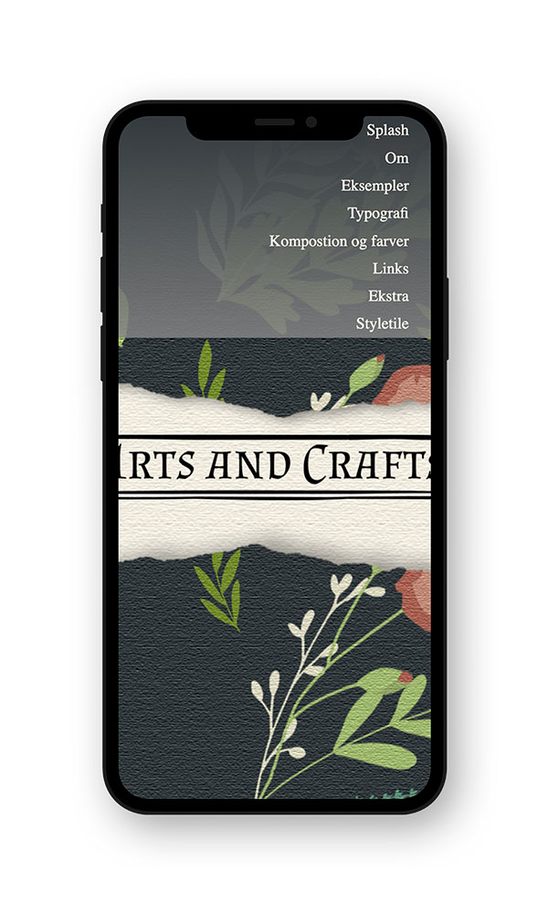

GRUNDLÆGGENDE WEB
02.04.02 Responsive site
Det første temaet i semester gikk ut på å lære grunnleggende koding og innholdsproduksjon. I denne oppgaven fikk jeg utdelt stilarten Arts and Crafts. Jeg kodet og lagde innholdet til side som forklarer og viser hva stilarten er. Dette var min første introduksjon til HTML og CSS koding. Det mest overraskende med temaet var å lære om hvor mange detaljer som skal med for å lage en interaktiv side som tilpasser seg forskjellige skjermstørrelser. Det var mye å sette seg inn i men jeg føler jeg lærte utrolig i disse første ukene. Jeg har vendt tilbake til oppgaven flere ganger i løpet av semester for å sjekke ting.
Her ser du splashbildet til mobilversjonen og desktopversjonen av siden jeg lagde.
